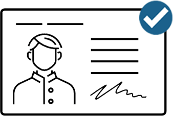
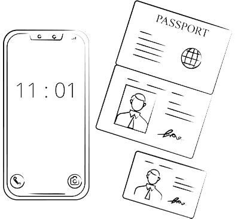
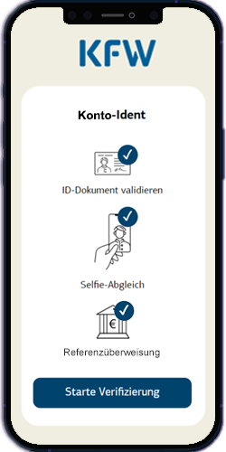

ID-Verifizierung
ID-Verifizierung mit "Konto-Ident"
Verifizieren Sie Ihre Identität durch eine Referenz-Überweisung von Ihrem Online-Banking-Konto:
Wie funktioniert die ID-Verifizierung mit "Konto-Ident"?
1
Zuerst machen Sie ein Foto Ihres Personalausweises oder Reisepasses. Das System validiert das vorliegende Dokument.
2
Dann machen Sie ein Selfie. Das System vergleicht das Bild des Ausweisdokuments und Ihr Selfie mit Hilfe biometrischer Merkmale.
3
Als letzten Schritt veranlassen Sie eine Referenzüberweisung von 1 Cent von Ihrem Online-Banking Konto. Die Referenzüberweisung erfolgt durch den Dienstleister FinTecSystems GmbH aus München.
Der gesamte Prozess dauert ca. 2 Minuten.

ID-Dokument validieren
Selfie Abgleich
Referenzüberweisung
Für die Verifizierung benötigen Sie:

• Ihr Smartphone
• Ihren Personalausweis oder Reisepass
Prozess auf dem Smartphone fortsetzen:
Um den Prozess so sicher wie möglich zu gestalten, müssen Sie die Ausweis-Fotos und das Selfie mit Ihrem Smartphone machen. Bitte scannen Sie den QR-Code, um den Prozess auf Ihrem Telefon zu starten:
Wenn Sie nicht wissen, wie Sie den QR-Code scannen, hilft Ihnen unser Tutorial.
Schritt 1: Kamera aktivieren
Android
Wenn Sie ein Android-Smartphone verwenden, müssen Sie Google öffnen und dann das Kamerasymbol auf der rechten Seite antippen.
iPhone
Wenn Sie ein iPhone verwenden, müssen Sie das Kamerasymbol antippen.
Schritt 2: QR-Code scannen
Android
iPhone
Halten Sie die Kamera auf den QR-Code auf Ihrem Desktop. Ein Link wird geöffnet. Bitte tippen Sie mit dem Finger auf den Link.
Schritt 3: Setzen Sie die ID-Verifizierung auf Ihrem Smartphone fort

Der ID-Verifizierungs-Prozess wird auf Ihrem Smartphone geöffnet
QR-Code scannen
Bitte scannen Sie jetzt den QR-Code mit Ihrem Smartphone